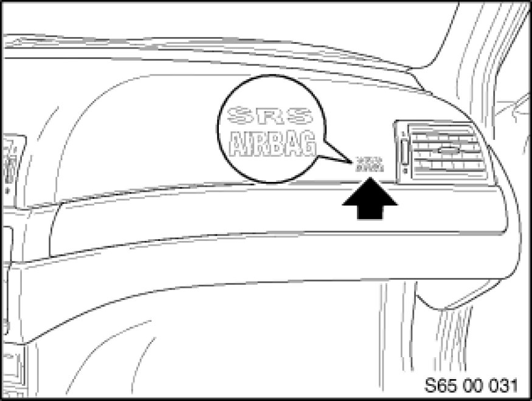
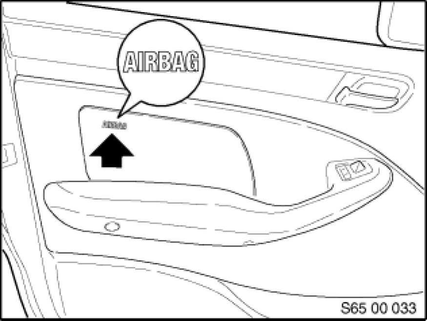
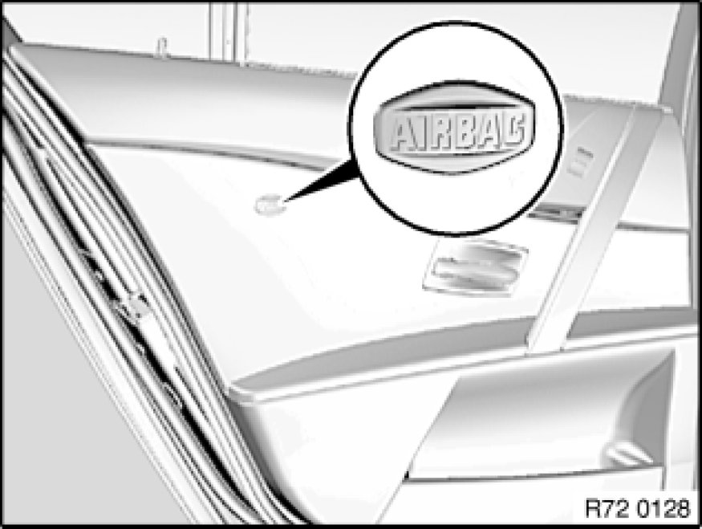
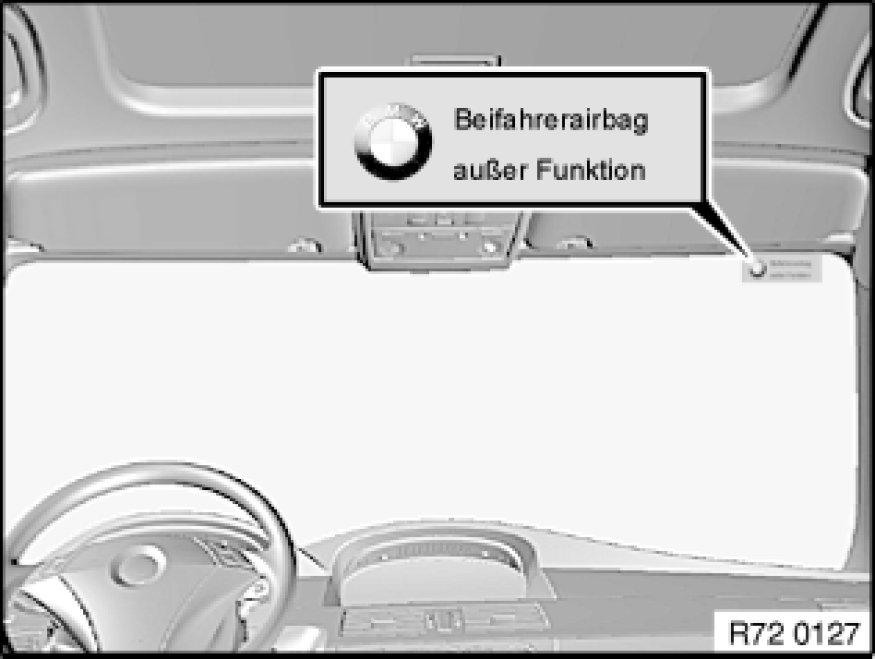
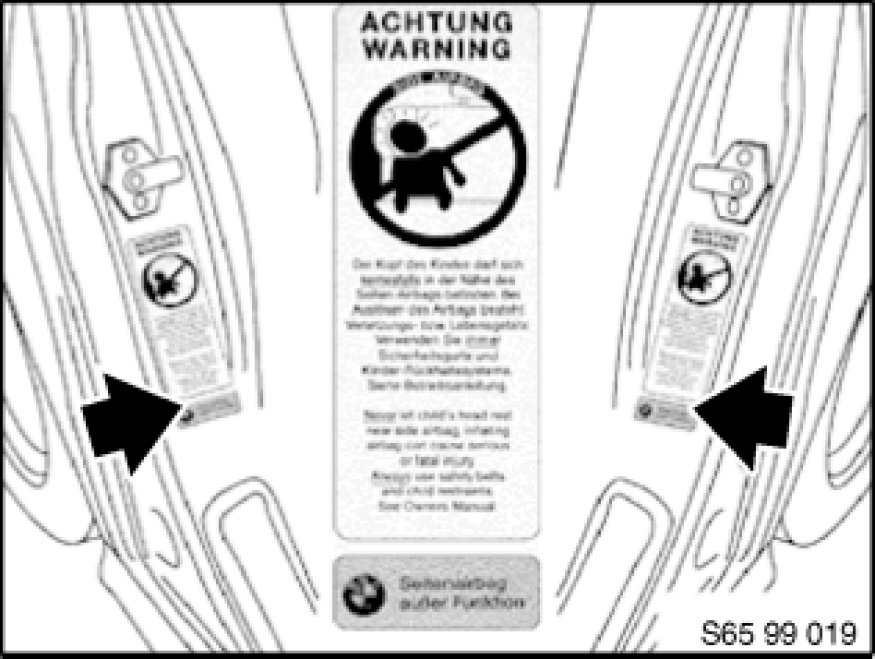
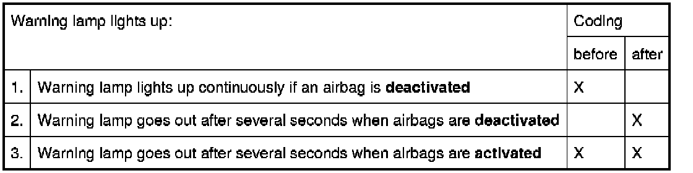

RA 7212 - Deactivation of Airbags
72 12 ... - Deactivation of airbags
Warning!
- The responsibility for (de-)activation rests with the customer.
The airbags should always be deactivated if the front passenger seat is fitted with a child seat.
- Customer consent must be documented.
- Observe notes and instructions on (de-)activation procedure.

The following airbags can be (de-)activated:
- Passenger airbag
- Side airbag (front passenger), front
- Side airbag (front passenger), rear
Important!
Head airbag on passenger side remains active.
R50/R53 up to 04/04 and E83 up to 09/04 only:
For details of deactivation, see following work steps.
R50/R53 from 04/04 and E83 from 09/04 only:
see Deactivating front passenger airbag Deactivating Front Passenger Airbags with Key-Operated Switch with key-operated switch.

Necessary preliminary tasks:
- Read and comply with safety regulations [1][2]Safety Regulations for Handling Components with Gas Generators
- Disconnect battery Instructions for Disconnecting and Connecting Battery

Passenger airbag
Note:
Seat occupancy detector remains connected.
- Expose plug connection of passenger airbag Removing and Installing/Replacing Airbag Module on Passenger Side
- Disconnect plug connection Unlocking/Locking Airbag Plug Connections
- Tie back disconnected cable and secure with cable strap (rattling noises)
- Stick on warning signs (see below)
- Code airbag control unit (see DIS)
- Documentation of customer consent and storage in car's file
- Entry in car's documents (Germany only)
- Replacement of passenger belt Removing and Installing/Replacing Front Left or Right Seat Belt with belt force limitation by version without belt force limitation

Side airbag, front
- Expose plug connection of side airbag Removing and Installing Left or Right Front Door Trim Panel
- Disconnect plug connection Unlocking/Locking Airbag Plug Connections of corresponding side airbags
- Tie back disconnected cables and secure with cable strap (rattling noises)
- Stick on warning signs (see below)
- Code airbag control unit (see DIS)
- Documentation of customer consent and work in car's file
- Entry in car's documents (Germany only)

Side airbag, rear
- Expose plug connection of side airbag Removing and Installing Left or Right Rear Door Trim Panel
- Disconnect plug connection Unlocking/Locking Airbag Plug Connections of corresponding side airbags
- Tie back disconnected cables and secure with cable strap (rattling noises)
- Stick on warning signs (see below)
- Code airbag control unit (via CIP)
- Documentation of customer consent and work in car's file
- Entry in car's documents (Germany only)

Warning sign, passenger airbag
- Stick on a warning sign (sourcing reference: BMW Parts Service - Component Group 01/Form BMW) with the text "Passenger airbag out of operation" from the inside to the top outer edge of the windshield on the passenger side.
Note:
Remove the warning sign when the passenger airbag is reactivated.

Warning signs, side airbag
- Stick on 2 warning signs (sourcing reference: BMW Parts Service/Component Group 01 - Form BMW) with the text "Achtung Warning Side-Airbag" and "Side airbag out of operation" to the B-pillars (front side airbag) or C-pillars (rear side airbag) to the nearest free space below the door lock.
Note:
Remove warning signs when reactivating side airbags.
Passenger Airbag Off light (US version only)
- Remove Airbag Off indicator Service and Repair (POL) or trim
- Disconnect plug from Airbag Off indicator
- Tie back plug and secure with cable strap (rattling noises)
- Install trim
- Code airbag control unit
Function check (except US version)
The function of the airbag system is checked when the ignition key is turned in the ignition switch.

Note:
A coding of the airbag control unit must be carried out so that the warning lamp goes out again after deactivation.